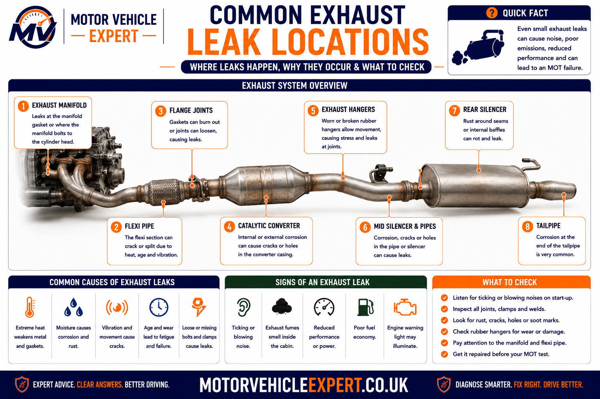
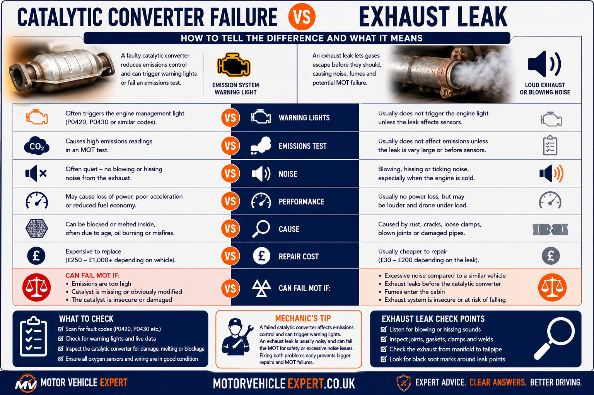
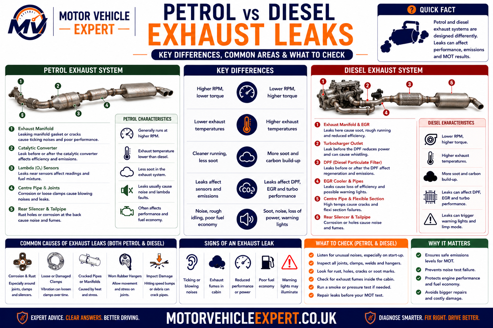
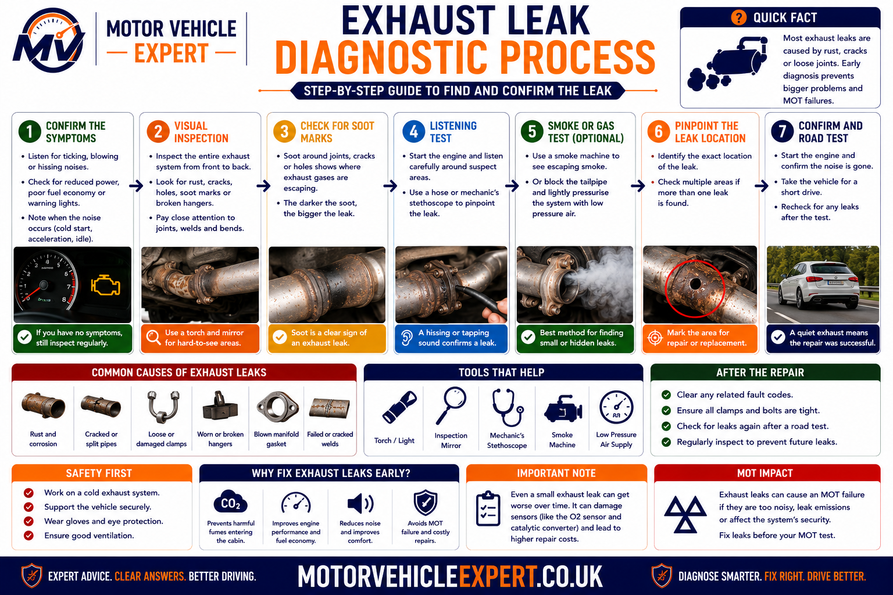
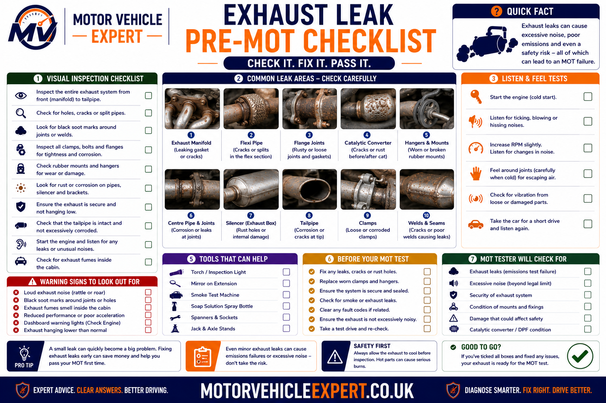

Can an Exhaust Leak Fail an MOT?
Yes. An exhaust leak can fail an MOT when it is serious, makes the exhaust system insecure or incomplete, causes clearly excessive noise, affects emissions testing or involves missing, modified or defective emissions-control equipment.
What Can Fail?
Serious gas leaks, insecure exhaust sections, excessive noise, missing emissions equipment and emissions readings above the permitted limits can all result in failure.
What May Still Pass?
Light surface corrosion may pass where the exhaust remains structurally sound, securely mounted, sufficiently gas-tight and effective at controlling noise.
What Is Urgent?
Cabin fumes, a hanging exhaust, hot gases near fuel or wiring, severe power loss or a flashing warning light require immediate attention.
A small exhaust noise is not automatically harmless. Leak location, component security, heat exposure, fumes, emissions readings and noise all determine how serious the fault is. Early diagnosis is usually cheaper than waiting for corrosion or movement to damage a larger section.
How the Exhaust System Works
The exhaust system carries hot combustion gases away from the engine and passenger compartment. It also reduces noise, supports engine-management monitoring and directs gases through emissions equipment before they leave the vehicle through the tailpipe.
1. Gas Collection
The exhaust manifold collects combustion gases from each cylinder and directs them into the front exhaust section or turbocharger.
2. Emissions Treatment
Catalytic converters, diesel particulate filters and related sensors reduce harmful pollutants and monitor system performance.
3. Gas Transfer
Pipes, flexible sections and joints carry exhaust gases beneath the vehicle while allowing engine movement and thermal expansion.
4. Noise Reduction
Resonators and silencers reduce pressure pulses before gases leave through the intended tailpipe outlet.
Exhaust Manifold
Bolted to the cylinder head, the manifold handles extremely hot gases and is vulnerable to cracks, warped flanges and gasket failure.
Flexible Section
The flexi-pipe absorbs engine movement so that vibration and torque reaction do not crack the remaining exhaust system.
Catalytic Converter or DPF
These components reduce harmful emissions and must remain present where they were fitted as part of the original system.
Centre Pipe
The centre section carries gases beneath the floor and may include a resonator or centre silencer to reduce noise.
Rear Silencer
The rear box reduces exhaust noise before gases leave the tailpipe. Internal condensation often causes corrosion here.
Mountings and Hangers
Rubber supports and metal brackets hold the system in position while allowing controlled movement.
A broken mounting at the rear can place extra strain on the flexi-pipe or manifold at the front. A professional inspection should therefore assess the complete system rather than replacing only the visibly damaged section.
Where Exhaust Leaks Commonly Develop
Exhaust leaks usually appear where heat, vibration, corrosion, engine movement or road impact is greatest. The sound can travel through the pipework, so the area where the noise is heard is not always the true location of the leak.

Heat, corrosion, vibration and movement affect different parts of the exhaust in different ways. Identifying the exact leak location is essential before repair costs can be estimated.
Manifold and Gasket
High temperatures can crack the manifold, distort the sealing face or burn through the gasket between the manifold and cylinder head.
Flexi-Pipe
The flexible section can split, fray or separate internally after years of engine movement and vibration.
Flanges and Clamps
Corroded bolts, failed sealing rings, loose clamps and distorted mating surfaces can allow gases to escape between sections.
Catalyst or DPF Housing
Impact damage, cracked welds or corrosion can create leaks around emissions components and sensor connections.
Centre Pipe
Long exposed sections beneath the vehicle can corrode, split or become damaged by kerbs, road debris and speed humps.
Silencers and Tailpipe
Internal condensation often weakens seams, inlet pipes, outlet pipes and tailpipe welds from the inside out.
Safe exhaust inspection requires suitable lifting equipment, adequate ventilation and protection from hot components, toxic gases and moving parts.
Exhaust Manifold and Gasket Leaks
Exhaust manifolds operate under extreme heat and repeatedly expand and contract. Over time, the manifold can crack, the gasket can burn through, mounting studs can break or the sealing face can become distorted.
Cold-Start Ticking
A sharp ticking sound that follows engine speed and becomes quieter as the engine warms is a common manifold-leak symptom.
Black Soot Around the Joint
Carbon deposits around a manifold port, gasket edge or crack may reveal where gases are escaping.
Fumes Near the Bulkhead
Front leaks can release gases close to ventilation intakes, wiring, hoses and openings into the passenger compartment.
Common Causes
- ✓ Cracked cast or fabricated manifold.
- ✓ Burnt manifold gasket.
- ✓ Broken mounting stud or bolt.
- ✓ Warped sealing face.
- ✓ Excessive engine movement.
- ✓ Turbocharger or downpipe stress.
Workshop Checks
- ✓ Listen during a genuine cold start.
- ✓ Inspect for soot around the ports.
- ✓ Check studs, nuts and flange security.
- ✓ Inspect wiring and hoses for heat damage.
- ✓ Review oxygen-sensor and fuel-trim data.
- ✓ Confirm the repair after warm-up.
Escaping gases can damage wiring, hoses, sound insulation and nearby components. They may also enter the ventilation system or disturb oxygen-sensor readings.
Flexi-Pipe, Flange and Joint Leaks
The flexi-pipe allows the engine and exhaust to move without transferring excessive force into the remaining system. When the section deteriorates, the inner bellows or outer braid may split, creating a blowing or rasping noise that becomes louder under acceleration.
Split Flexi-Pipe
Often creates a harsh rasp or deep blowing sound that increases as the engine moves under load.
Failed Flange Gasket
A damaged sealing ring, burnt gasket or distorted flange can allow gases to escape from a bolted joint.
Loose Sleeve Clamp
Incorrect overlap, corrosion or insufficient clamp tension can prevent a sleeve joint sealing correctly.
Noise Under Acceleration
Exhaust pressure and engine movement increase under load, making flexi-pipe and joint leaks much more noticeable.
Noise Changes With Movement
A leak may open or close slightly as the exhaust moves, helping identify a damaged flexible section or stressed connection.
A joint will continue leaking if the pipe is thin, distorted, misaligned or too short to overlap properly. The repair must restore both gas-tightness and mechanical support.
Centre Pipe, Silencer and Tailpipe Leaks
Exhaust sections beneath the vehicle are exposed to rain, road salt, mud and impact damage. Moisture also forms inside the system as exhaust gases cool, which means silencers can corrode from the inside even when the outer casing initially looks acceptable.
Centre Pipe Corrosion
Long exposed sections can rust through or become damaged after contact with road debris, kerbs and speed humps.
Perforated Silencer
Corrosion commonly develops around seams, low points and the inlet and outlet pipes attached to the silencer.
Loose Internal Baffles
Broken chambers inside the silencer can rattle and reduce sound control even where the outer casing has no large hole.
Cracked Tailpipe Weld
Rear impact, corrosion and vibration can loosen or separate the final outlet from the rear silencer.
Broken Mounting Bracket
A failed bracket can allow the exhaust to move, knock against the body and place stress on adjoining joints.
Failed Heat Shield
Loose heat shields can rattle and imitate an exhaust leak, especially at particular engine speeds.
Water is a normal by-product of combustion and may drip from the tailpipe, particularly during cold weather and short journeys. It becomes more concerning when accompanied by persistent thick white smoke, coolant loss, a sweet smell or overheating.
Once corrosion perforates the casing, the surrounding metal is often thin. Paste or bandage may provide only temporary relief, while section replacement normally gives a more reliable repair.
Signs Your Exhaust System May Be Leaking
Exhaust leaks usually create warning signs before they become severe enough to cause an MOT failure. The exact symptom depends on the leak location, exhaust pressure, engine speed, operating temperature and whether the system is also loose or misaligned.
Ticking or Tapping
A sharp ticking noise that follows engine speed often points to a manifold crack, failed manifold gasket or leak close to the cylinder head.
Blowing or Chuffing
A regular blowing sound commonly develops around split pipes, failed flange gaskets, loose clamps and corroded silencer seams.
Rasping Under Acceleration
A harsh rasp that becomes louder when pulling away or climbing a hill often indicates a split flexi-pipe or stressed exhaust joint.
Deep Booming Noise
A large hole in the centre pipe, resonator or rear silencer usually creates a deeper exhaust note that increases with engine load.
Exhaust Fumes
Fumes around the engine bay, beneath the floor or inside the passenger compartment indicate gases escaping before the intended tailpipe outlet.
Black Soot Deposits
Dry carbon around a flange, weld, clamp, sensor boss or crack can reveal the path of escaping exhaust gas.
Engine Warning Light
A leak before an oxygen sensor can disturb fuel-trim and catalyst-monitoring data, causing emissions-related fault codes.
Reduced Power
Front exhaust leaks may affect turbocharger response, sensor readings or exhaust flow and contribute to poor acceleration.
Knocking Beneath the Car
Broken hangers, poor alignment or loose exhaust sections can allow the system to strike the floor, suspension or rear axle.
Tell the garage exactly when the symptom occurs. A noise that is loudest from cold, under acceleration, over bumps or at one particular engine speed can significantly narrow the likely fault location.
What the Exhaust Noise Pattern Can Reveal
The same leak can sound different as the system heats, engine speed rises or the engine moves in its mountings. Matching the noise to the driving condition helps distinguish a gas leak from a loose mounting, heat shield or internal silencer fault.
Cold Start Only
Manifold cracks and gasket leaks can be loudest when cold and become quieter as the metal expands.
Acceleration Only
Higher exhaust pressure and greater engine movement can expose flexi-pipe, flange and joint leaks.
Noise Over Bumps
A broken mounting or misaligned section may knock against the body or suspension when the vehicle moves.
Rattle at Certain RPM
Resonance may make a loose heat shield, internal silencer baffle or lightly leaking joint vibrate at one engine speed.
Fumes Mainly When Stationary
Exhaust gases may collect around the vehicle at idle, especially when airflow is limited or the leak is beneath the passenger compartment.
Warning Light Appears After the Noise
A front leak may begin as a mechanical noise and later disturb oxygen-sensor, fuel-trim, catalyst or DPF monitoring.
Exhaust pipes transmit sound and vibration through the vehicle. A front leak may seem to come from beneath the floor, while a rear mounting fault may be heard inside the cabin.
How Exhaust Leaks Are Assessed During the MOT
During the MOT, the tester checks the exhaust system for condition, completeness, security, serious leakage, excessive noise and the presence of required emissions-control equipment. The vehicle must also complete the emissions test that applies to its fuel type, age and approval category.
Exhaust Gas-Tightness
The system is inspected for serious leaks from the manifold, pipes, joints, silencers and emissions components.
System Security
Exhaust sections must be adequately supported and must not be likely to detach, strike the road or create danger.
Exhaust Noise
The vehicle must not be clearly louder than a similar vehicle fitted with an effective standard silencing system.
System Completeness
Required exhaust and emissions components must remain fitted and must not be obviously removed or altered.
Petrol Emissions
Depending on the vehicle, the test may assess carbon monoxide, hydrocarbons and lambda readings.
Diesel Emissions
Diesel vehicles may undergo smoke-opacity testing together with checks on the DPF and related emissions equipment.
Serious Exhaust Leak
MOT Result: FAILA substantial leak means the system is no longer sufficiently gas-tight and will normally result in failure.
Loose or Hanging Exhaust
MOT Result: FAILAn insecure section can strike the vehicle or road and may detach while driving.
Clearly Excessive Noise
MOT Result: FAILA damaged or modified system that produces unreasonable noise can fail even where the pipework remains physically attached.
Missing Catalytic Converter
MOT Result: FAILA catalytic converter fitted as standard must remain present where the relevant requirements apply.
Missing Diesel Particulate Filter
MOT Result: FAILA DPF fitted as standard must remain present and must not appear obviously removed or modified.
Light Surface Corrosion
MOT Result: Usually PassSurface rust may pass where there is no serious leak, structural weakness or insecure component.
An exhaust may appear complete and secure but the vehicle can still fail because of excessive petrol emissions, diesel smoke, catalyst inefficiency, DPF problems or unreliable tailpipe sampling.
Common Exhaust Faults That Can Cause MOT Failure
MOT outcomes depend on the actual defect found on the day. The table below separates cosmetic deterioration from faults that affect gas-tightness, security, noise, emissions equipment or measured emissions.
| Observed condition | Why it matters | Likely MOT outcome |
|---|---|---|
| Light surface corrosion without leakage | No loss of exhaust function or security | May pass if the system remains sound |
| Serious leak from a pipe, joint or silencer | Loss of gas-tightness and possible safety risk | MOT failure |
| Exhaust insecure or likely to detach | May strike the road, body or other traffic | MOT failure and urgent repair |
| Clearly excessive exhaust noise | Silencing system ineffective or excessively modified | MOT failure |
| Required catalytic converter or DPF missing | Vehicle no longer retains required pollution control | MOT failure |
| Petrol emissions above permitted limits | Engine or catalyst not controlling emissions correctly | MOT failure |
| Diesel smoke above permitted limits | Combustion, turbocharger, injector or DPF fault possible | MOT failure |
Immediate Repair
Serious leaks, insecure exhaust sections, missing emissions equipment and cabin fumes should be corrected without delay.
Plan Repair Soon
Small developing leaks, weakened clamps and early corrosion may not fail immediately but can deteriorate quickly.
Best Practice
Arrange an exhaust inspection before the MOT if the vehicle has unusual noise, soot marks, warning lights or previous emissions-related advisories.
Can a Loose Exhaust or Broken Mount Fail an MOT?
Yes. Exhaust sections are heavy and must be supported by rubber hangers, metal brackets, clamps and secure joints. A broken mounting can allow the system to hang low, strike the road or place damaging stress on the manifold, flexi-pipe and adjoining joints.
Split Rubber Hanger
A torn or missing rubber support allows excessive movement and can lower the exhaust beneath the vehicle.
Corroded Metal Bracket
Exhaust brackets can separate from the pipe or silencer when corrosion weakens the weld and surrounding material.
Loose Clamp or Flange
Loose connections can create both gas leakage and mechanical movement between exhaust sections.
Signs of an Insecure Exhaust
- ✓ Knocking beneath the floor.
- ✓ Tailpipe sitting lower than normal.
- ✓ Movement during startup or gear changes.
- ✓ Rattle over bumps.
- ✓ Pipe contacting the body or suspension.
Correct Repair Procedure
- ✓ Replace broken or stretched mountings.
- ✓ Repair failed brackets and welds.
- ✓ Realign the complete exhaust system.
- ✓ Check for movement-related cracks.
- ✓ Confirm safe clearance after repair.
A hanging section can strike the road, damage the vehicle, create sparks or detach into the path of other road users. Arrange safe recovery or immediate repair.
Can a Loud Exhaust Fail an MOT?
Yes. An exhaust can fail if the noise is clearly excessive compared with a similar vehicle fitted with a standard exhaust system in reasonable condition. The fault may be caused by corrosion, separation, internal silencer damage or deliberate modification.
Perforated Silencer
A hole in the casing allows exhaust pulses to escape before noise is properly reduced.
Disconnected Pipe
A separated joint can bypass downstream silencers and make the vehicle suddenly much louder.
Broken Internal Baffles
Failed chambers inside a silencer can cause rattling and reduce sound control.
Silencer Delete
Removing noise-control components may make the exhaust clearly excessive in everyday use.
Poor Custom Fabrication
Incorrect pipe sizing or rough welding can create resonance, leaks and excessive noise.
Loose Exhaust Section
Excessive movement can create booming, rattling and impact noise even where the gas leak itself is small.
An aftermarket exhaust may pass where it is secure, complete, sufficiently gas-tight, retains required emissions equipment and is not clearly excessive in noise.
Why Exhaust Fumes Inside the Car Are Dangerous
Exhaust gases contain carbon monoxide and other harmful combustion products. Carbon monoxide is colourless and odourless, so the absence of a strong exhaust smell does not prove that the passenger compartment is safe.
Headache or Dizziness
Symptoms developing during a journey may indicate exposure to exhaust gases and require immediate fresh air.
Fumes While Idling
Exhaust gases can collect around a stationary vehicle, particularly where airflow is limited.
Leak Beneath the Floor
A damaged centre pipe or joint can release gases close to floor openings, door seals and ventilation paths.
Move occupants into fresh air, switch off the engine when safe and arrange recovery or urgent inspection. Opening the windows is not a permanent solution.
A suspected cabin-fume problem should be diagnosed immediately. The safety risk exists whenever the vehicle is used, regardless of how long remains on the MOT certificate.
Can an Exhaust Leak Cause an Emissions Failure?
Yes. An exhaust leak can affect emissions testing when it allows outside air into the system, disturbs oxygen-sensor readings, changes fuel-trim behaviour or prevents the analyser from receiving a representative tailpipe sample.
The effect depends heavily on where the leak is located. A leak before the first oxygen sensor can influence engine fuelling, while a leak near the rear of the vehicle may mainly affect noise and tailpipe sampling.
False Lean Reading
Outside air entering before an oxygen sensor can make the exhaust appear leaner than the actual combustion mixture.
Fuel Trim Increases
The engine-management system may add fuel in response to the false lean signal, increasing consumption and emissions.
Catalyst Monitoring Changes
Leaks around oxygen sensors can disturb the signal comparison used to monitor catalytic-converter efficiency.
Unstable Tailpipe Sample
A downstream leak can dilute the sample or make emissions readings fluctuate during the MOT test.
Diesel Smoke Concerns
Diesel leaks may accompany turbocharger, injector, DPF or combustion faults that increase smoke output.
Warning Lights and Fault Codes
Oxygen-sensor, fuel-trim, catalyst, boost, DPF-pressure or temperature codes may appear depending on the system affected.
| Leak location | Possible effect | Typical diagnostic clue |
|---|---|---|
| Before the first oxygen sensor | Outside air may affect fuel-control readings | Positive fuel trims or lean-related fault codes |
| Between oxygen sensors | Catalyst-monitoring data may become unreliable | Catalyst-efficiency or oxygen-sensor codes |
| After emissions sensors | Less effect on fuelling but increased noise and leakage | Blowing noise without major fuel-trim changes |
| Near the tailpipe | Emissions sampling may become diluted or unstable | Erratic analyser readings or obvious rear leakage |
Catalyst-efficiency codes can be influenced by exhaust leaks, oxygen-sensor faults, misfires, oil burning, coolant contamination and incorrect fuel control. The full system should be diagnosed before an expensive component is replaced.
Catalytic Converter Fault or Ordinary Exhaust Leak?
A catalytic-converter fault and a physical exhaust leak can produce similar symptoms, including warning lights, unusual noise, poor performance and emissions failure. The two faults are different and must be tested separately.

Exhaust leaks mainly affect gas-tightness, noise and sensor data, while catalytic-converter faults involve poor emissions treatment, internal damage or restricted exhaust flow.
Ordinary Exhaust Leak
- ✓ Blowing, ticking or rasping noise.
- ✓ Black soot around a crack or joint.
- ✓ Noise changes with engine load.
- ✓ Visible hole, split or failed gasket.
- ✓ Possible fuel-trim disturbance.
- ✓ Fumes escaping before the tailpipe.
Catalytic Converter Fault
- ✓ Catalyst-efficiency fault code.
- ✓ Internal rattling from the housing.
- ✓ Excess emissions without a major external leak.
- ✓ Loss of power from internal restriction.
- ✓ Excessive converter temperature.
- ✓ Damage caused by misfire or contamination.
1. Inspect for Leakage
Check the manifold, flanges, sensor bosses, welds and catalyst housing for soot, cracks and escaping gases.
2. Read Live Data
Compare oxygen-sensor activity, fuel trims, misfire data and catalyst-monitoring information.
3. Check Exhaust Flow
Backpressure, vacuum and temperature testing can help identify an internally restricted converter.
4. Verify Emissions
Gas analysis confirms whether excessive emissions remain after leaks and engine faults have been corrected.
Outside air and unstable oxygen-sensor readings can make catalyst diagnosis misleading. Restore exhaust gas-tightness first where practical, then repeat the relevant tests.
Catalytic Converters, DPFs and MOT Requirements
Emissions-control equipment fitted as standard must remain present where required. This includes catalytic converters on relevant petrol and diesel vehicles and diesel particulate filters fitted as part of the original exhaust system.
Catalytic Converter
Converts harmful exhaust gases into less harmful substances when the engine and converter operate correctly.
Diesel Particulate Filter
Captures diesel soot and periodically burns it off during a regeneration process.
Exhaust Sensors
Oxygen, temperature, pressure and nitrogen-oxide sensors help the engine-management system monitor emissions performance.
Missing Catalytic Converter
MOT Result: FAILA catalytic converter fitted as standard must remain present where the relevant MOT requirements apply.
Missing Diesel Particulate Filter
MOT Result: FAILA DPF fitted as standard must remain present and must not appear obviously removed or modified.
Obvious Internal Removal
MOT Result: FAILA cut-open, gutted or visibly bypassed emissions component can fail even when the outer casing remains in place.
Common Causes of Catalyst Damage
- ✓ Persistent ignition misfires.
- ✓ Rich fuel mixture.
- ✓ Excessive oil consumption.
- ✓ Coolant entering the exhaust.
- ✓ Impact damage or overheating.
Common Causes of DPF Problems
- ✓ Repeated short journeys.
- ✓ Failed regeneration.
- ✓ Injector or turbocharger faults.
- ✓ Excessive engine oil consumption.
- ✓ Pressure-sensor or temperature-sensor faults.
A replacement catalytic converter or DPF can fail again if misfires, fuelling faults, injector problems, oil burning or overheating remain unresolved.
Can a Modified Exhaust Pass an MOT?
A modified exhaust can pass where it remains secure, complete, sufficiently gas-tight, not clearly excessive in noise and retains all emissions-control equipment required for the vehicle.
Aftermarket Rear Silencer
May pass where it is securely fitted, does not leak and does not make the vehicle clearly excessive in noise.
Custom Stainless-Steel System
May pass where fabrication is sound and all required emissions equipment remains fitted.
Silencer Delete
Removing noise-control components can make the vehicle clearly excessive in noise and create a high MOT failure risk.
Catalytic Converter Removal
Removing a required catalytic converter can cause failure even if the vehicle still drives normally.
DPF Removal
Removing a factory-fitted DPF creates a high MOT failure risk and may lead to wider legal and insurance problems.
Poorly Welded Repair
Rough fabrication may create gas leaks, weak joints, poor alignment and excessive movement.
| Modification | Main concern | Likely MOT risk |
|---|---|---|
| Aftermarket rear silencer | Noise, security and gas-tightness | May pass if correctly fitted and not excessive |
| Custom stainless-steel exhaust | Fabrication quality and retained emissions equipment | May pass where complete and compliant |
| Silencer delete | Excessive noise and ineffective silencing | High failure risk |
| Catalytic-converter removal | Required emissions equipment missing | High failure risk |
| DPF removal | Required diesel emissions equipment missing | High failure risk |
| Poorly welded exhaust repair | Leakage, weakness and insecurity | Depends on repair quality and condition |
Relevant modifications should be declared to the insurer, and the vehicle must also comply with separate road-use, construction and noise requirements.
Petrol and Diesel Exhaust Leaks Compared
Petrol and diesel vehicles can leak from the same physical exhaust components, but the effect on engine management, emissions testing and repair risk can differ significantly.

Petrol leaks commonly affect lambda control and catalytic monitoring, while diesel leaks may also affect turbocharger, DPF-pressure and regeneration performance.
Petrol Exhaust-Leak Effects
- ✓ Manifold or gasket ticking.
- ✓ False lean oxygen-sensor readings.
- ✓ Positive fuel-trim correction.
- ✓ Increased carbon monoxide or hydrocarbons.
- ✓ Lambda readings outside the expected range.
- ✓ Catalyst-efficiency fault codes.
Diesel Exhaust-Leak Effects
- ✓ Leaks around manifold or turbocharger joints.
- ✓ Reduced boost response or power.
- ✓ Heavy soot around failed joints.
- ✓ DPF pressure-sensor pipe leaks.
- ✓ Incorrect exhaust-temperature readings.
- ✓ DPF regeneration problems.
| Diagnostic area | Petrol vehicle | Diesel vehicle |
|---|---|---|
| Front exhaust leak | May affect oxygen-sensor and fuel-trim readings | May affect turbo response and produce heavy soot |
| Main emissions component | Catalytic converter | Oxidation catalyst, DPF and sometimes SCR equipment |
| Common electronic clues | Fuel-trim, lambda and catalyst-efficiency codes | Boost, DPF-pressure, temperature and regeneration codes |
| MOT emissions concern | Carbon monoxide, hydrocarbons and lambda | Smoke opacity and emissions-equipment condition |
| Visible deposits | Dry soot around larger leaks | Heavy black soot often more obvious |
Soot around a manifold, turbocharger flange, sensor connection or exhaust joint may identify a physical leak. The full exhaust and emissions system should be inspected before expensive parts are replaced.
How a Professional Garage Diagnoses an Exhaust Leak
A professional exhaust diagnosis should identify the exact leak, confirm why it developed and determine whether related sensors, mountings or emissions components have also been affected. Replacing parts based only on noise can lead to unnecessary expense and repeat failure.

A structured approach prevents incorrect parts replacement and ensures that exhaust leakage, emissions faults and mounting problems are diagnosed separately.
1. Confirm the Complaint
Establish whether the concern is ticking, blowing, rasping, booming, rattling, fumes, poor performance or a warning light.
2. Inspect From Cold
Some manifold and gasket leaks become quieter as the exhaust warms and expands, making a genuine cold start essential.
3. Inspect the Complete System
Check the manifold, flexi-pipe, joints, catalyst, DPF, pipes, silencers, clamps, brackets and mountings.
4. Look for Physical Evidence
Search for soot, cracks, failed welds, frayed flexi-braid, corrosion, impact damage and broken supports.
5. Test for Gas Leakage
Use controlled workshop leak-testing methods to identify small openings that are difficult to confirm visually.
6. Scan the Engine System
Read fault codes and live data where the vehicle has warning lights, poor performance or emissions concerns.
7. Identify the Root Cause
Determine whether corrosion, engine movement, poor alignment, impact damage or failed mountings caused the leak.
8. Verify the Repair
Recheck gas-tightness, security, clearances, noise, fault codes and emissions after completing the repair.
If the noise disappears before the vehicle reaches the garage, a clear video of the first cold start can help demonstrate the symptom. It should support, not replace, physical inspection.
What a Mechanic Checks During an Exhaust Inspection
A proper exhaust inspection is more than locating a hole. The technician should assess gas-tightness, component condition, mountings, alignment, sensor operation, emissions equipment and any heat damage caused by escaping gases.
Leak Location
The technician identifies whether the gas is escaping from a gasket, pipe, flexible section, weld, silencer or emissions component.
Corrosion Severity
Surface rust is separated from perforation, structural weakness and widespread metal deterioration.
Mounting Condition
Rubber hangers, metal brackets and clamps are checked for stretching, cracking, corrosion and insecurity.
System Alignment
The exhaust should sit without excessive tension and maintain safe clearance from the body, suspension and fuel system.
Sensor and Wiring Condition
Oxygen sensors, temperature sensors, pressure pipes and nearby wiring are inspected for damage or incorrect readings.
Emissions Performance
Petrol gas readings or diesel smoke and DPF data may be checked where the leak has affected emissions performance.
Useful Petrol Diagnostic Data
- ✓ Short-term fuel trim.
- ✓ Long-term fuel trim.
- ✓ Upstream oxygen-sensor activity.
- ✓ Downstream oxygen-sensor activity.
- ✓ Misfire data.
- ✓ Catalyst-monitor status.
Useful Diesel Diagnostic Data
- ✓ Requested and actual boost pressure.
- ✓ DPF differential pressure.
- ✓ Exhaust-temperature readings.
- ✓ DPF soot loading.
- ✓ Regeneration history.
- ✓ Injector correction values.
Restricting a running exhaust can expose you to toxic gases, hot components and moving parts. Excessive pressure may also damage a weak pipe or silencer.
How Serious Is Your Exhaust Leak?
Exhaust leak severity depends on more than noise. Location, gas volume, exhaust security, cabin fumes, heat exposure, warning lights and emissions effects all determine how urgently the vehicle needs attention.
A quiet front leak can be more dangerous than a loud rear leak if gases are entering the passenger compartment or escaping near electrical and fuel-system components.
Surface Corrosion Only
Lower SeverityNo perforation, abnormal noise, fumes, insecurity or emissions problem is present.
Small Developing Leak
Moderate SeverityMild ticking, a small soot mark or light blowing is present, but the exhaust remains secure.
Loud or Serious Leak
High SeverityStrong gas escape, excessive noise, warning lights or reduced performance indicate a significant fault.
Cabin Fumes or Hanging Exhaust
Urgent DangerFumes inside the car, a section likely to detach or hot gases near vulnerable parts require immediate action.
| Condition | Risk level | Recommended action |
|---|---|---|
| Surface rust without leakage | Lower | Monitor during routine servicing |
| Faint ticking with a small soot mark | Moderate | Arrange diagnosis before the leak enlarges |
| Loud blowing or visible split | High | Limit use and repair promptly |
| Warning light with a front leak | High | Diagnose the leak and engine data together |
| Exhaust hanging or striking the road | Urgent | Stop driving and arrange recovery |
| Fumes entering the passenger compartment | Urgent | Move occupants into fresh air and stop using the car |
Can You Drive With an Exhaust Leak?
Whether the vehicle can be driven safely depends on where the leak is located and how serious it is. A small secure rear leak may allow a short journey to a garage, while cabin fumes, severe noise, poor performance or an insecure exhaust can make continued driving unsafe.
Stop Driving If...
- ✓ Fumes enter the passenger compartment.
- ✓ The exhaust is hanging or likely to detach.
- ✓ Hot gases are escaping near fuel or wiring.
- ✓ The vehicle has severe power loss.
- ✓ The engine warning light is flashing.
- ✓ Occupants feel dizzy, nauseous or unusually tired.
A Short Garage Journey May Be Possible If...
- ✓ The leak is minor and near the rear.
- ✓ No fumes enter the cabin.
- ✓ The exhaust remains securely mounted.
- ✓ No warning lights are present.
- ✓ Performance remains normal.
- ✓ The garage is nearby and expecting the vehicle.
Exhaust gases can accumulate rapidly in garages and workshops. Always provide proper ventilation and never rely on smell to judge carbon-monoxide risk.
Typical Exhaust Leak Repair Costs in the UK
Repair prices depend on vehicle design, leak location, labour access, corrosion, seized fasteners and whether a local repair or a complete exhaust section is required.
Clamp or Joint Repair
£40–£120Suitable where a clamp, sleeve or sealing joint has failed but the surrounding pipe remains structurally sound.
Exhaust Gasket Replacement
£80–£250Covers flange or manifold-gasket work where bolts and studs can be removed without major additional repair.
Flexi-Pipe Repair
£120–£400May involve welding in a new flexible section or replacing the complete front pipe.
Rear Silencer Replacement
£120–£350Includes replacement of the rear box, clamps and fitting where corrosion is limited to the final section.
Centre Pipe or Silencer
£150–£450Covers replacement of a centre pipe, resonator or centre silencer with new sealing parts.
Exhaust Manifold Repair
£300–£1,200+Cost can rise significantly where broken studs, poor access or turbocharger removal are involved.
Catalytic Converter
£300–£1,500+Price varies greatly between aftermarket, approved, integrated and manufacturer-supplied units.
DPF Replacement
£700–£2,500+Replacement should only follow proper diagnosis and correction of the fault that damaged or blocked the original filter.
Diagnostic Inspection
£60–£180May include visual inspection, smoke testing, fault-code checks and emissions analysis.
Integrated manifolds, turbochargers, catalysts and front pipes can make apparently simple leaks expensive. Obtain a written diagnosis and itemised quotation before approving major work.
Exhaust Leak Repair Cost Comparison
The cheapest repair is not always the best long-term option. A local weld or sleeve can be suitable where the metal is sound, while widespread corrosion usually makes full section replacement more reliable.
| Repair | Typical UK cost | Usually required when | Important consideration |
|---|---|---|---|
| Clamp, sleeve or joint reseal | £40–£120 | A joint leaks but surrounding pipe remains sound | Temporary materials are unsuitable for widespread corrosion |
| Flange or manifold gasket | £80–£250 | A gasket has failed without major component damage | Broken studs can increase labour significantly |
| Weld-in flexi-pipe | £120–£300 | The flexible section has split but adjoining pipe is usable | Correct alignment and flex length are essential |
| Complete front pipe | £200–£600 | The flexi-pipe or catalyst pipe is supplied as one assembly | Vehicle design has a major effect on price |
| Centre exhaust section | £150–£450 | The centre pipe or silencer is perforated | Adjacent joints and mountings should be checked |
| Rear silencer | £120–£350 | The rear box or tailpipe is corroded or internally damaged | Short journeys often accelerate internal corrosion |
| Exhaust manifold | £300–£1,200+ | The manifold is cracked, warped or has broken fixings | Access and stud removal determine labour cost |
| Catalytic converter | £300–£1,500+ | The housing, internal core or emissions performance has failed | Correct misfires and fuel-control faults first |
| Diesel particulate filter | £700–£2,500+ | The DPF is damaged or cannot be recovered safely | Identify the cause of blockage or overheating |
Should the Exhaust Be Repaired or Replaced?
A local repair may be suitable where the opening is small, the surrounding material is sound and the exhaust remains correctly aligned. Replacement is normally more dependable when corrosion is widespread or the component has failed structurally.
Repair May Be Suitable When...
- ✓ The surrounding metal remains sound.
- ✓ The leak is confined to one joint or weld.
- ✓ The component can be repaired without distortion.
- ✓ Mountings and alignment remain correct.
- ✓ A durable gas-tight repair is possible.
Replacement Is Better When...
- ✓ Corrosion covers a large area.
- ✓ Metal crumbles around the opening.
- ✓ Several seams or joints are leaking.
- ✓ The silencer has failed internally.
- ✓ Previous patches have failed repeatedly.
Paste or Bandage
May temporarily seal a small low-stress opening but is not a permanent repair for thin, corroded or moving metal.
Professional Welding
Can provide a durable repair where the material remains sound and suitable for welding.
Section Replacement
Usually provides the most reliable result where corrosion or structural damage is widespread.
A new exhaust section can fail prematurely if old hangers, brackets or alignment faults continue placing stress on the system.
Checking an Exhaust Leak Before Buying a Used Car
Exhaust condition can reveal how well a vehicle has been maintained. A simple rear silencer leak may be manageable, while a cracked manifold, missing DPF or repeated emissions failure can expose the buyer to substantial repair costs.
Walk Away If...
- ✓ The catalytic converter or DPF is missing.
- ✓ Exhaust fumes enter the cabin.
- ✓ The exhaust is hanging or insecure.
- ✓ The car has repeated emissions failures.
- ✓ Warning lights have recently been cleared.
Negotiate If...
- ✓ The rear silencer has a confirmed leak.
- ✓ A clamp or gasket needs replacement.
- ✓ A written garage quotation is available.
- ✓ The remaining exhaust is structurally sound.
Good Signs
- ✓ Quiet cold start.
- ✓ No soot around joints.
- ✓ Secure mountings.
- ✓ No warning lights.
- ✓ Clean MOT emissions history.
A simple-looking exhaust noise can come from a cracked manifold, integrated catalyst, broken stud or deleted DPF. Obtain an independent diagnosis before purchase.
Pre-MOT Exhaust Leak Checklist
A basic pre-test inspection can identify obvious exhaust defects before the MOT. Checks should be carried out safely and without crawling beneath a vehicle supported only by a jack.

Check the system before the test if the vehicle has unusual exhaust noise, soot marks, warning lights, fumes or a history of emissions advisories.
1. Listen From Cold
Listen for ticking, chuffing, blowing, rasping or unusually deep exhaust noise.
2. Look for Soot
Check visible flanges, flexi-sections, clamps, sensor bosses and silencers.
3. Check the Tailpipe
Confirm the outlet is secure, correctly positioned and not hanging unusually low.
4. Check Mountings
Look for broken rubber supports, failed brackets and signs of contact with the vehicle body.
5. Watch for Fumes
Do not ignore exhaust smells, headaches or fumes around the passenger compartment.
6. Check Warning Lights
Investigate engine-management or emissions warnings before the MOT appointment.
7. Confirm Equipment Is Present
Required catalytic converters, DPFs and sensors should remain fitted and unmodified.
8. Arrange Inspection
Have any suspicious noise, soot mark, loose section or warning light diagnosed before the test.
This is especially useful where the vehicle previously failed on emissions or had a leak near an oxygen sensor, catalyst, DPF or turbocharger.
Explore the Exhaust, Emissions and MOT Knowledge Centre
Exhaust leaks can overlap with excessive noise, broken mountings, emissions failures, warning lights, exhaust smoke, poor acceleration and used-car buying risk. Continue through the related Motor Vehicle Expert guides below to understand the complete fault.
Exhaust Faults
Emissions and Smoke
Diagnostic Guides
Performance Symptoms
MOT Knowledge
Used-Car and Repair Planning
Exhaust Leak and MOT FAQs
These are the most common questions UK motorists ask about exhaust leaks, blowing exhausts, MOT failures, excessive noise, emissions equipment, temporary repairs and UK repair costs.
Can an exhaust leak fail an MOT?
Yes. An exhaust leak can fail an MOT when it is serious, makes the exhaust system insecure or incomplete, causes excessive noise, affects emissions testing or involves missing or defective emissions-control equipment.
Will a small exhaust leak fail an MOT?
A very small developing leak may not automatically cause failure, but the result depends on its location, severity, effect on exhaust security, noise and emissions. A leak judged serious by the tester will fail the MOT.
Can a blowing exhaust fail an MOT?
Yes. A blowing exhaust can fail when the leak is serious, the system is insecure, the noise is excessive or the leak prevents the vehicle from completing or passing the emissions test.
Can an exhaust manifold leak fail an MOT?
Yes. An exhaust manifold or manifold-gasket leak can fail when it is serious, creates excessive noise, releases gases dangerously or affects oxygen-sensor readings and emissions performance.
Can a leaking flexi-pipe fail an MOT?
Yes. A split or seriously leaking flexi-pipe can fail because exhaust gases escape from the system. It may also make the vehicle excessively noisy and release fumes beneath the vehicle.
Can a loud exhaust fail an MOT?
Yes. An exhaust can fail if its noise is clearly excessive compared with a similar vehicle fitted with a standard exhaust system in reasonable condition.
Can exhaust fumes inside the car fail an MOT?
Exhaust fumes inside the passenger compartment indicate a potentially dangerous leak requiring urgent investigation. The serious leak, insecure system or related exhaust defect may cause MOT failure.
Can an exhaust leak cause an emissions failure?
Yes. A leak can allow outside air into the exhaust, disturb oxygen-sensor and fuel-trim readings or make tailpipe sampling unreliable. The vehicle can also fail if its measured emissions exceed the applicable limits.
Can a missing catalytic converter fail an MOT?
Yes. A catalytic converter fitted as standard must be present where required. A missing, obviously modified or defective catalytic converter can cause an MOT failure.
Can a missing DPF fail an MOT?
Yes. A diesel particulate filter fitted as standard must remain present. A missing or obviously modified DPF can cause an MOT failure.
Can exhaust paste or repair tape pass an MOT?
A sound and effective repair may pass, but paste, putty or repair tape does not guarantee a pass. The exhaust must remain secure, sufficiently gas-tight, complete and not excessively noisy.
Can a modified sports exhaust pass an MOT?
Yes. A modified exhaust may pass when it is secure, complete, sufficiently gas-tight, not clearly excessive in noise and retains all emissions-control equipment required for the vehicle.
Does surface rust on an exhaust fail an MOT?
Surface corrosion alone does not normally cause failure if the exhaust remains secure, structurally sound and sufficiently gas-tight. Corrosion becomes more serious when it creates holes, weakness, leakage or insecure components.
How much does an exhaust leak cost to repair in the UK?
A minor clamp or joint repair may cost around £40 to £120, while flexi-pipe, manifold, catalytic-converter and DPF work can cost several hundred pounds or more. The exact price depends on the vehicle, leak location, access and condition of surrounding parts.
Understanding the Complete Exhaust and Emissions System
An exhaust leak cannot always be viewed as an isolated hole in a pipe. Safe and efficient operation depends on the manifold, turbocharger where fitted, flexible section, catalytic converter, diesel particulate filter, exhaust sensors, connecting pipes, silencers, mountings and tailpipe all working together correctly.
Engine-Side Components
The manifold, gasket, turbocharger connections and front pipe contain the hottest exhaust gases. Leaks here can affect performance, sensor readings, nearby wiring and cabin safety.
Emissions Components
Catalytic converters, DPFs and exhaust sensors reduce harmful pollutants and provide data used by the engine-management system.
Underbody Components
Centre pipes, resonators, silencers, clamps and hangers carry gases safely beneath the vehicle while controlling noise and allowing controlled movement.
A failed mounting can overload a flexible section, a manifold leak can disturb oxygen-sensor readings, and an unresolved engine fault can damage a replacement catalytic converter or DPF. Reliable repairs therefore require the entire exhaust and emissions system to be assessed rather than focusing only on the first visible defect.
A complete diagnosis combines mechanical inspection, exhaust leak testing, mounting checks, fault-code analysis, live sensor data and emissions testing. This prevents expensive parts from being replaced when the real fault is a leaking gasket, damaged sensor pipe, misfire or alignment problem.
What Every Driver Should Remember
Good Exhaust Maintenance
- ✓ Investigate ticking, blowing and rasping noises early.
- ✓ Check mountings whenever an exhaust section is replaced.
- ✓ Repair serious leaks before the MOT.
- ✓ Diagnose warning lights before replacing emissions parts.
- ✓ Confirm the catalyst and DPF remain fitted where required.
- ✓ Use durable repairs where surrounding metal is sound.
Never Ignore
- ✓ Exhaust fumes inside the passenger compartment.
- ✓ An exhaust section hanging beneath the vehicle.
- ✓ Hot gases escaping near wiring or fuel components.
- ✓ Clearly excessive exhaust noise.
- ✓ Engine-management or emissions warning lights.
- ✓ Repeated MOT emissions failures.
Arrange a proper inspection before the MOT if the vehicle has unusual exhaust noise, visible soot, cabin fumes, loose mountings, warning lights or a history of emissions problems. Early diagnosis normally reduces repair cost and prevents small faults from becoming serious safety defects.
Looking After Your Vehicle’s Exhaust System
An exhaust leak can range from a small developing joint failure to a serious MOT, emissions or passenger-safety problem. The key is to identify the exact leak location, understand why it developed and assess whether it has affected exhaust security, sensors, catalytic-converter performance, DPF operation or cabin safety.
Surface corrosion alone may not cause an MOT failure, but serious gas leakage, insecure components, excessive noise, missing emissions equipment and excessive measured emissions can all lead to rejection. Fumes inside the passenger compartment or an exhaust likely to detach should never be treated as routine maintenance.
Continue exploring our related guides including Car Exhaust Blowing Noise, Can an Exhaust Mount Fail an MOT?, Car Fails MOT on Emissions, Engine Management Light Guide, Fault Codes Explained and Car Smokes When Starting.
Together these articles form part of the Motor Vehicle Expert Exhaust, Emissions and MOT Knowledge Centre, helping UK motorists recognise warning signs, understand workshop diagnosis, prepare for MOT inspections, compare repair costs and make informed vehicle-maintenance and used-car buying decisions.